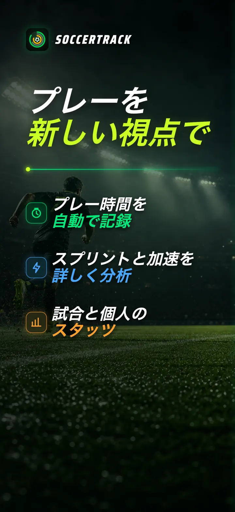
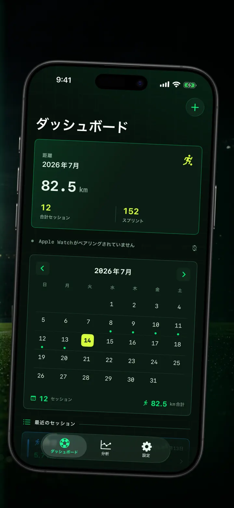
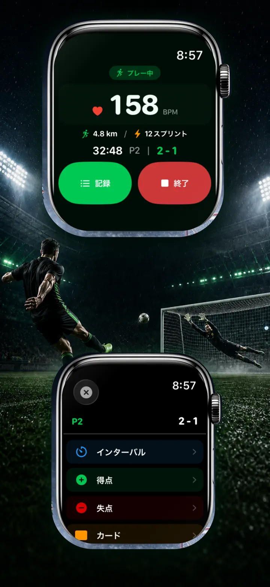
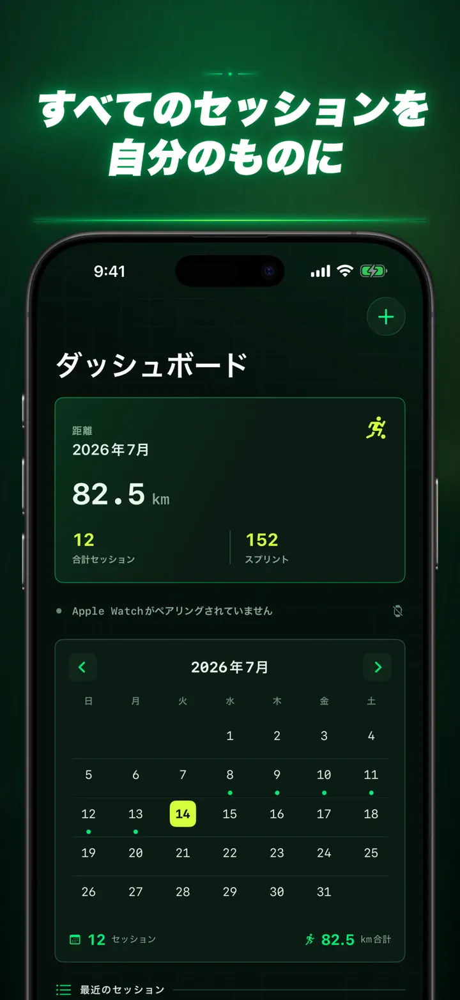
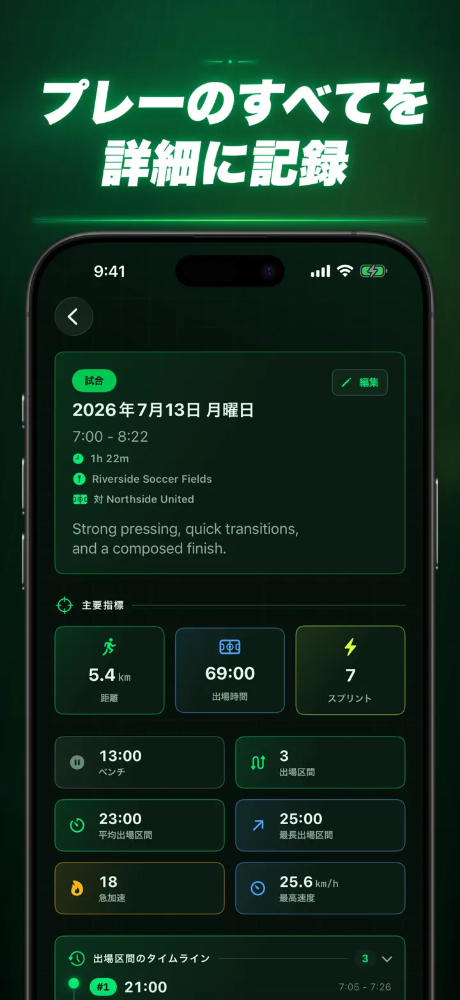
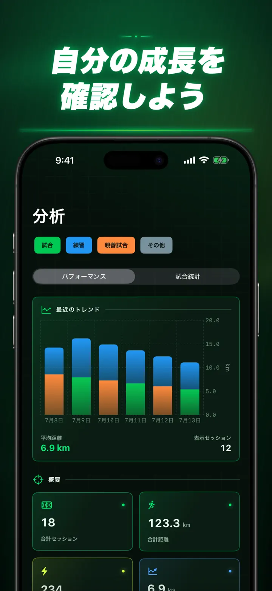
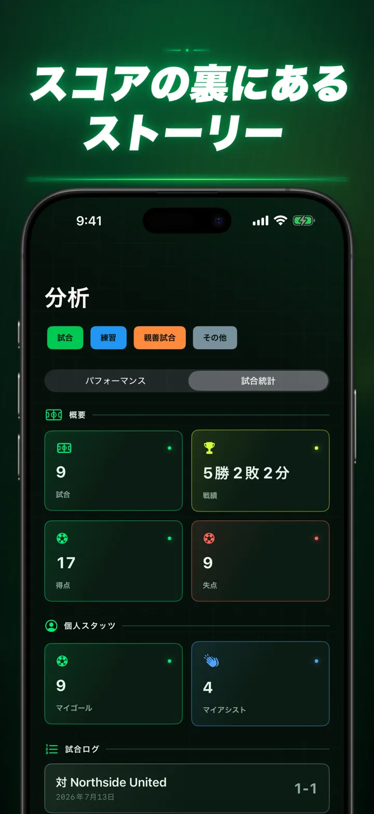
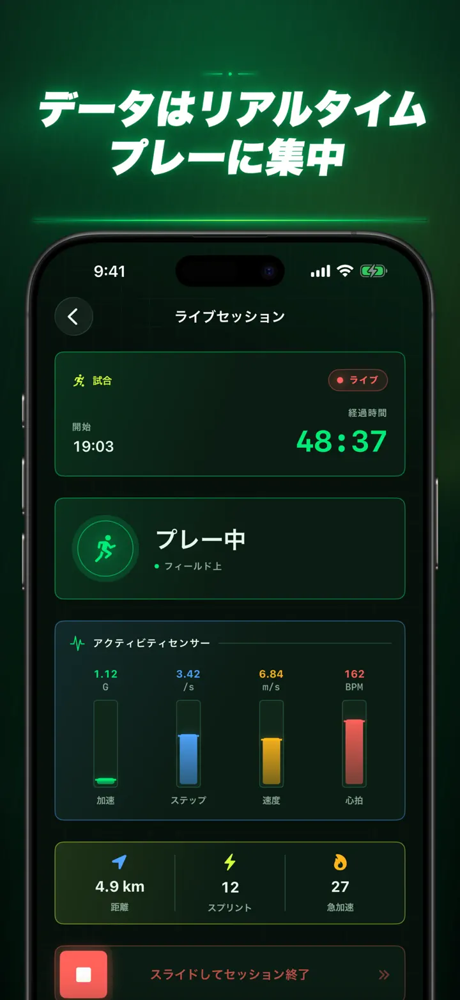
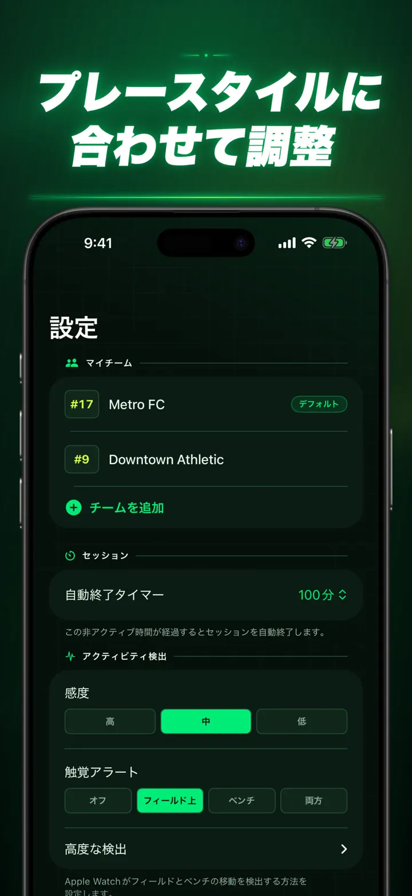
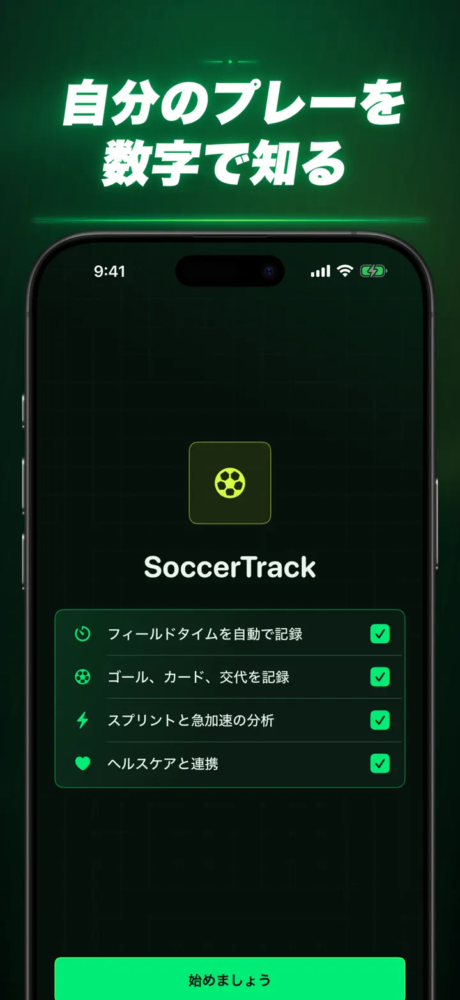

Soccer Time Track
サッカー出場時間・試合分析
セッションを始めたら、あとはプレーに集中。Apple Watchが出場時間とベンチ時間を自動で分け、ライブ指標、スプリント、試合イベント、成長の傾向を記録します。
App Storeからダウンロード
アプリについて
いつもの試合を、違う角度から。
Soccer Time Trackは、最終スコアだけでは分からない自分のプレーを知りたい選手のための試合トラッカーです。Apple Watchで開始し、試合に集中。終了後はiPhoneでパフォーマンスを詳しく振り返れます。
出場時間を自動で記録
実際にプレーしていた時間が分かります。モーション、ワークアウト、位置情報の信号から、プレー中、低活動、ベンチの各時間を判別します。
- 出場時間とベンチ時間
- プレー区間と見やすいタイムライン
- セッション全体の詳しい内訳
試合記録を手首から
試合、練習、親善試合、その他から選択。プレー中に次の内容を記録できます。
- 自チームと相手チームの得点
- 自分のゴールとアシスト
- イエローカードとレッドカード
- 選手交代とピリオド
プレーを数字で把握
出場時間だけでなく、次の指標も確認できます。
- 走行距離
- 平均速度と最高速度
- スプリントと高強度バースト
- 心拍数とアクティブカロリー
- ケイデンスと加速度
ライブデータを確認しながらプレーに集中
ペアリングしたiPhoneにはライブ指標を表示でき、Apple Watchではワークアウトの記録が続きます。試合に集中している間も、データはバックグラウンドで蓄積されます。
成長を振り返る
試合、練習、親善試合などを1つの履歴に保存。傾向や自己ベストを確認し、セッションを比較できます。チーム、背番号、対戦相手、場所、メモも追加でき、結果の背景まで残せます。
データを別の場所で使う場合は、セッション、プレー区間、試合イベントをCSVまたはJSONで書き出せます。
APPLE WATCHと「ヘルスケア」に対応
許可した場合、Soccer Time Trackはワークアウト、心拍数、モーション、位置情報のデータから分析を作成し、完了したサッカーワークアウトを「ヘルスケア」に保存します。自動記録にはApple Watchが必要です。iPhoneでセッションを手動追加することもできます。
あなたのデータは、あなたのもの
セッションはデバイス内に保存され、iCloud同期を有効にした場合は自分専用のiCloudデータベースに保存されます。Soccer Time Trackにアカウント、広告、第三者分析ツールはありません。
何分プレーしたかを推測するのは終わり。1分ごとの自分のプレーを確かめましょう。
プライバシーポリシー：https://masawata.net/SoccerTimeTrack/privacy-policy.html 利用規約：https://www.apple.com/legal/internet-services/itunes/dev/stdeula/
スクリーンショット









Soccer Time Track
セッションを始めたら、あとはプレーに集中。Apple Watchが出場時間とベンチ時間を自動で分け、ライブ指標、スプリント、試合イベント、成長の傾向を記録します。
App Storeからダウンロード